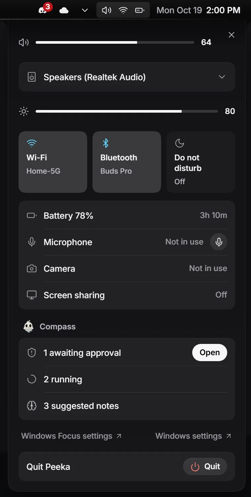
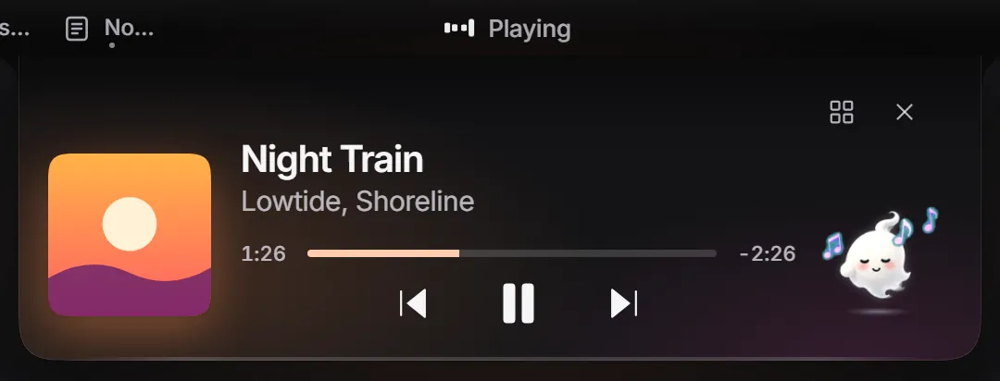
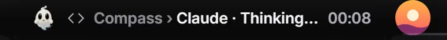
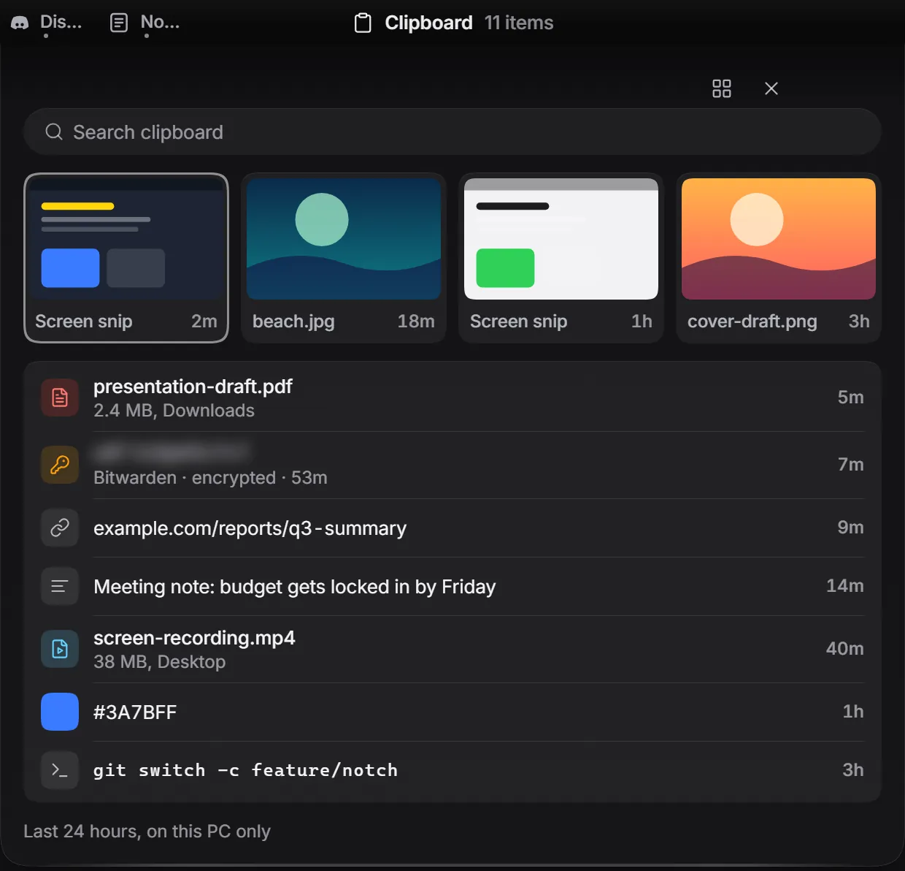
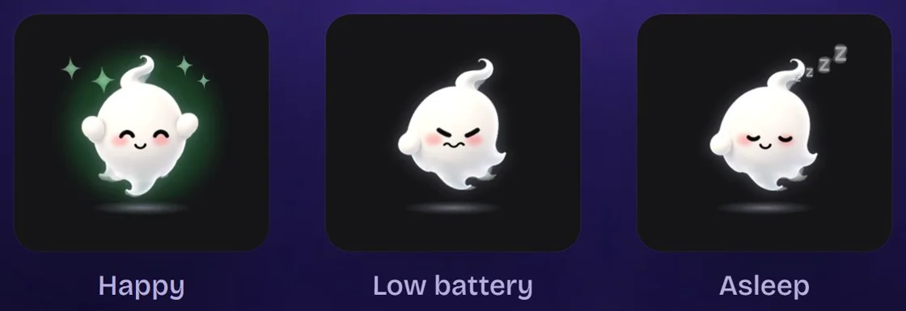
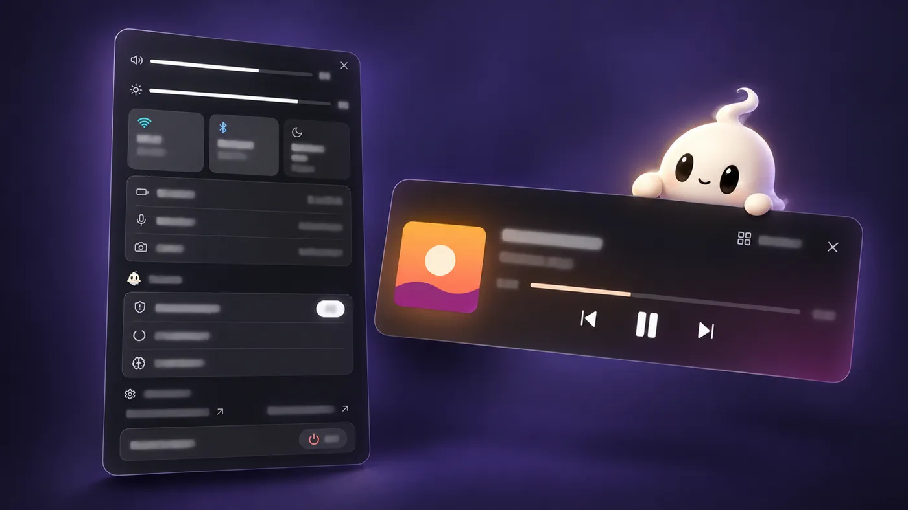

Wi-Fi, sound and battery, one click away.
Quick settings drop down from the strip. Volume, brightness and radio changes show up as short island events.
Peeka replaces the taskbar with a slim top strip. Music, Claude Code tasks and alerts grow out of it.
A song starts, a download finishes, a timer runs out, Claude Code asks for permission. The pill in the middle of the strip opens into a card with the controls you need, then tucks itself away.

While a Claude Code session thinks in the island, the song you were playing waits in the small bubble beside it. One button in Settings connects Claude Code, and another removes exactly those entries.


Quick settings drop down from the strip. Volume, brightness and radio changes show up as short island events.

Text, images and file paths. Password-like items, like the Bitwarden row above, stay blurred until you hover, never go to plugins, and sit in a vault encrypted with Windows DPAPI.
It hangs below the island and reacts to what the island is doing.

Peeka runs locally. Its own code makes no outbound network requests: no update check, no analytics, no telemetry. This page has none either.
Plugins may use their own internet connection. Peeka cannot control that, and the approval window says so.
Plugins speak JSON-RPC 2.0 over a named pipe only your user can open. They send data and Peeka draws it: no HTML, CSS or scripts from plugins, permissions you approve scope by scope, and you can disconnect a plugin at any time.
// 1. Ask for a scope. Peeka shows its own approval window.
{"jsonrpc":"2.0","id":1,"method":"hello","params":{
"id":"com.example.focus","name":"Focus","publisher":"Example",
"version":"1.0.0","api":1,"scopes":["island.protrusion"],
"why":{"island.protrusion":"Show the focus timer in the island"}}}
// 2. Send data. Peeka draws the row and counts the timer.
{"jsonrpc":"2.0","id":2,"method":"island.protrusion.set","params":{
"title":"Deep work","icon":"timer","state":"info",
"timer":{"started_at":"2026-10-18T09:00:00Z"}}}Yes. The exe is not code-signed yet, so SmartScreen may say "Windows protected your PC". Choose More info, then Run anyway. If you would rather not, you can build it from source.
Windows 10 and 11. Peeka needs the WebView2 runtime, which is already part of Windows 11. Download the installer, or the portable exe if you prefer not to install anything.
If you connected Claude Code, press Remove in Settings first. Choose Restore taskbar (in the Start panel), quit Peeka, then uninstall it from Windows Settings → Apps (installer) or delete peeka.exe (portable). Settings, the clipboard vault and plugin tokens live in %LOCALAPPDATA%\notch; delete that folder too.
Yes. The source code is MIT licensed. The ghost mascot is the one exception: its artwork is © isDionn and not covered by MIT, so forks bring their own mascot. See the mascot license.
English.

v0.3.3 · ~3.7 MB · Other downloads (portable exe). Not code-signed yet, so SmartScreen may warn: choose More info, then Run anyway.